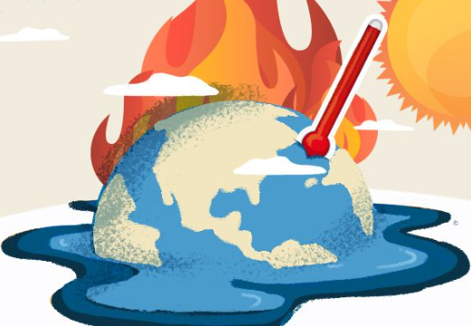

Tema 1. Cambio climático
Ir al inicio

El cambio climático se refiere a las variaciones a largo plazo de las temperaturas y los patrones del clima en la Tierra. Aunque estos cambios pueden ocurrir de manera natural, actualmente se deben principalmente a las actividades humanas, como la quema de combustibles fósiles, la deforestación y algunas actividades industriales.
- Principales causas del cambio climático:
- Quema de combustibles fósiles: el uso de carbón, petróleo y gas para producir energía y transportar personas y mercancías.
- Deforestación: la eliminación de árboles disminuye la capacidad de los bosques para absorber dióxido de carbono.
- Actividades industriales y agrícolas: algunos procesos liberan gases de efecto invernadero a la atmósfera.